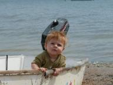
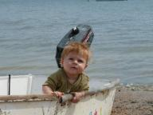
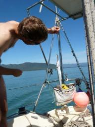
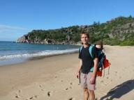
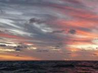

|


|
Ashmore Reef
» exacte locatie
 Na vijf dagen op zee komen we zaterdag aan op het Ashmore Reef. Een rif midden in zee dat bij Australie hoort en waar ze een aantal boeien hebben gemaakt om aan af te meren. De douane van Australie heeft hier standaard een boot liggen om vluchtelingen vanuit Indonesie in de gaten te houden. Dat ligt hier 130 mijl vandaan. Indonesie mag traditioneel vissen hier en dat doen ze in zeilboten van hout zo groot als Hafskip met zeilen gemaakt van stof. Op zo'n zeilboot zitten zo tien man en ze koken op een houtvuur aan boord. Een motor hebben ze niet, ze zeilen zo kris kras tussen de riffen door. Voor boten zoals wij die dat te spannend vinden is er een mooi kanaaltje met groene en rode tonnen aangelegd. Alleen komen wij aan tegen zonsondergang en de riffen zijn nauwelijks te zien en de kleuren van de tonnen moeilijk te onderscheiden. Maar we willen wel graag naar binnen. Onze vrienden, Steven en Toya, van de boot Cheers komen ons helpen. Met hun snelle bijboot zijn ze zo bij ons en varen een stukje voor ons uit. We pakken een boei en we liggen heerlijk stil. Zondag doen we het rustig aan, we snorkelen en laat in de middag gaan we met Siebe op het strandje spelen. In het begin blijft hij op een plek zitten en eet wat zand. Gelukkig wrijft hij het dit keer niet in zijn ogen. Langzaam wordt hij vrijer en begint wat rond te kruipen. Siebe heeft er een enorme speelruimte bij!
Na vijf dagen op zee komen we zaterdag aan op het Ashmore Reef. Een rif midden in zee dat bij Australie hoort en waar ze een aantal boeien hebben gemaakt om aan af te meren. De douane van Australie heeft hier standaard een boot liggen om vluchtelingen vanuit Indonesie in de gaten te houden. Dat ligt hier 130 mijl vandaan. Indonesie mag traditioneel vissen hier en dat doen ze in zeilboten van hout zo groot als Hafskip met zeilen gemaakt van stof. Op zo'n zeilboot zitten zo tien man en ze koken op een houtvuur aan boord. Een motor hebben ze niet, ze zeilen zo kris kras tussen de riffen door. Voor boten zoals wij die dat te spannend vinden is er een mooi kanaaltje met groene en rode tonnen aangelegd. Alleen komen wij aan tegen zonsondergang en de riffen zijn nauwelijks te zien en de kleuren van de tonnen moeilijk te onderscheiden. Maar we willen wel graag naar binnen. Onze vrienden, Steven en Toya, van de boot Cheers komen ons helpen. Met hun snelle bijboot zijn ze zo bij ons en varen een stukje voor ons uit. We pakken een boei en we liggen heerlijk stil. Zondag doen we het rustig aan, we snorkelen en laat in de middag gaan we met Siebe op het strandje spelen. In het begin blijft hij op een plek zitten en eet wat zand. Gelukkig wrijft hij het dit keer niet in zijn ogen. Langzaam wordt hij vrijer en begint wat rond te kruipen. Siebe heeft er een enorme speelruimte bij!
|
|
|
Vaarwel Australie
» exacte locatie
We hebben Australie definitief verlaten. Het land waar we het langste van alle landen op onze reis zijn geweest. Twaalf maanden in totaal, terwijl we bij vertrek drie jaar geleden niet eens van plan waren er te stoppen. En dat ons eerste kind hier geboren zou worden hadden we toen al helemaal niet verwacht. Australie zal daardoor voor ons altijd een speciale status houden, maar eerlijk is eerlijk, het land op zich heeft niet zo'n bijzondere indruk op ons gemaakt als sommige andere plekken waar we zijn geweest. Het is een Westers land dat in grote lijnen lijkt op wat we in Nederland gewend zijn en daardoor minder verrassend. Verder lijkt de grote attractie de enorme leegte en ruimte te zijn, maar we zijn er achter gekomen dat we het leuker vinden om hier en daar wat dorpjes met mensen tegen te komen. Ondanks dat was het voor ons een prima plek om geweest te zijn. Het was erg gezellig met alle mensen die we vooral in Brisbane hebben leren kennen. Verder zijn we erg dankbaar voor de eerste klas medische voorzieningen die bij de geboorte van Siebe hard nodig waren. En ik heb een baan gevonden en ons reisbudget kunnen aanvullen voor de terugweg.
Over de terugweg gesproken. De hoe-terug-vraag begint steeds meer op de voorgrond te raken. Het knelpunt is natuurlijk de uit de hand gelopen piraterij in de Golf van Aden. We hebben even overwogen om rond Zuid Afrika te zeilen, maar dat wordt zo'n haastwerk dat we die optie hebben laten vallen. Grofweg staan er nog drie opties open: doorvaren via de Golf van Aden, doorvaren en met een alternatieve bemanning door de Golf van Aden en Ilse en Siebe met het vliegtuig sturen of de reis niet afmaken en de boot in Azie verkopen. We zijn er nog totaal niet uit. Gelukkig hebben we nog wat bedenktijd.
Terwijl ik dit schrijf hobbelt de boot rustig over de golven op weg naar het onbewoonde Ashmore Reef waar we even stoppen voordat we Indonesie in duiken. Aan de verhalen te horen is daar geen gebrek aan nieuwe indrukken en ook niet aan grote hoeveelheden mensen. Precies waar we aan toe zijn zou je zeggen. We zullen het zien.
|
|
|
Darwin
» exacte locatie
Ondertussen liggen we al weer ruim een week in Darwin. We genieten er
erg van om even niet te hoeven zeilen. Ons visum voor Australie loopt
af op 3 augustus en we zijn van plan tot de laatste dag hier te
blijven. Aan het strand is een leuke jachtclub met koud bier en goed,
goedkoop en veel eten. We zijn daar al een aantal keer geweest. Rustig
aan maken we onze boot klaar voor Indonesie. Tot de verbeteringen
behoort een zoutwaterkraan in de keuken om drinkwater te besparen. Dat
is in Indonesie vaak moeilijk te krijgen. Verder verbouwen we onze
boot tot een fort op het gebied van muggen zodat we de hele serie
tropische ziektes buiten kunnen houden.
Siebe heeft de laatste twee weken ineens de kunst van het staan onder
de knie gekregen. In het begin een beetje wiebelig, helemaal omdat we
toen nog aan het zeilen waren, maar nu begint hij al behoorlijk stevig
te staan. Nog niet los, maar wel met maar een hand vast. En hij
schuifelt zo'n beetje langs de bank binnen en kan ook oversteken naar
de andere kant. Elke dag is er wel weer een nieuw dingetje dat hij
doet of kan. Toen hij laatst in bad zat hielden we een bakje met
kleine gaatjes in de bodem omhoog zodat er straaltjes water uit
kwamen. Hij probeerde steeds maar het waterstraaltje te pakken.
 

|
|
|
Aboriginals
» exacte locatie
Onze nieuwsgierigheid naar de Aboriginals is groot. Op de kant gekomen zien we een bord waarop staat dat als je alcohol mee het eiland op neemt daar een boete voor staat van duizend dollar. Dat is ongeveer zeshonderd euro. In het verleden zijn er problemen geweest met alcoholmisbruik in deze gemeenschappen, vandaar de maatregel.
Het Aboriginaldorp ligt een kilometer of vier lopen. Al snel vinden we de weg en zien we wilde paarden lopen en hier en daar wat rook opstijgen uit stukken verbrande begroeiing. De weg is van rood zand. Het voelt een beetje alsof we in een filmdecor lopen. Een mysterieuze sfeer. Siebe valt al gauw in slaap bij Joost in de rugdrager. We lopen langs het vliegveldje, bestaande uit een landingsbaan zonder hek. Er staat een mast met een telefoonantenne: er is hier mobiel bereik. Het duurt niet lang voor we de eerste huizen zien. Bij sommige staat een auto en er lopen een paar honden op straat. We gaan eerst op zoek naar de 'traditional land owner', zeg maar het stamhoofd, om te vragen of we een kijkje mogen nemen. Mooi, daar loopt iemand, eens even vragen waar de traditional land owner is. Via via vinden we Johnny uiteindelijk, zittend met wat vrienden aan een tafel onder de schaduw van een boom. Hij vindt het goed dat we even rondkijken. Eigenlijk zei hij: "Je loopt hier toch al rond?". We geven hem de cake en daar is hij erg blij mee. Hij deelt 'm meteen uit.
We wandelen wat rond en kopen een ijsje. Ze hebben een supermarktje dat vanuit Darwin bevoorraad wordt. Prijzen het dubbele van op het vaste land. In het kunstcentrum zijn een paar Aboriginals aan het werk. De een beschildert grote schelpen, iemand is bezig met een mooi schilderij en twee vrouwen weven prachtige mandjes van riet. In allerlei kleuren. Ik vraag of ze het riet verven maar ze blijken het zo te vinden op het eiland. In het algemeen is men niet zo spraakzaam tegen ons. We raken aan de praat met een blanke man die hier werkt en komen wat meer te weten. In deze gemeenschap wonen driehonderd mensen. Ze zijn van alle gemakken voorzien, hebben wasmachines en televisies. Niks traditioneels meer? Jawel, ze mogen nog schildpadden vangen en eten en doen dat ook. Niet zijn smaak. En ze delen alles met elkaar, bootjes, auto's en zelfs hun huizen. Het verbranden van bos blijkt overigens opzettelijk te worden gedaan om de grond vruchtbaar te maken.
Het was leuk om in dit dorpje rond te lopen, onze nieuwsgierigheid is bevredigd. Alhoewel een goed beeld vormen in drie uurtjes natuurlijk niet echt mogelijk is. We zijn net op de terugweg als we een auto horen aankomen. Het is heet en ik heb wel zin in een lift en steek m'n duim op. Het is Johnny met een vriend. Natuurlijk krijgen we een lift. Als we er zijn vraagt de vriend of we niet wat sterke drank aan boord hebben. We zeggen dat we niets hebben en lopen naar onze bijboot. Hmmm, die lift is ineens wel verdacht ;-).
|
|
|
Arnhemland
» exacte locatie
We zijn vandaag aangekomen in Arnhemland na vijf dagen op zee. Arnhemland is een gebied in het noorden van Australie dat is aangemerkt als Aboriginal-land. We zijn nu al meer dan een jaar in Australie en hebben eigenlijk vrijwel niets meegekregen van deze oorspronkelijke bewoners. Omdat het met een boot geen probleem is om in dit normaal lastig te bereiken gebied te komen, wilden we toch wel even een kijkje nemen.
We liggen geankerd bij South Goulburn Island, op aanraden van onze buurman op de ankerplek in Cairns die dit gebied uitgebreid had bezeild. Dit zou een vriendelijke en open gemeenschap zijn. We hebben er nog niets van gezien, want het dorpje ligt aan de andere kant van het eiland, vier kilometer verderop. We hebben het vandaag even rustig aan gedaan. Siebe in bad, biertje met salamiworst, lekker gegeten met verse tonijnbiefstuk (vangst van de dag). En het uitzicht hier is ook niet slecht met fraaie rode en witte kliffen die doen denken aan foto's van Australie in de toeristenfolders.
Morgen gaan we op onderzoek uit. Een klein obstakel is dat je om hier aan land te mogen gaan, eerst schriftelijk toestemming van de gemeenschap moet hebben. We hebben wel een verzoek ingediend, maar we weten niet of we de toestemming hebben gekregen. Hopelijk komen we ermee weg door te zeggen dat het verzoek nog in behandeling is. Tevens heeft Ilse een cake gebakken die we weg kunnen geven. Van de ene kant lijkt het hier niet heel primitief meer te zijn. Er staan moderne brandstoftanks op de kant en we zagen vandaag een klein vliegtuigje van het eiland wegvliegen. Van de andere kant, er stijgen op verschillende plekken om ons heen rookwolken van vuren op. We zijn erg benieuwd hoe de Aboriginal in 2009 leeft. Wordt vervolgd.
|
|
|
Krokodillen
» exacte locatie
Die krokodillen houden ons in ons hoofd wel bezig hier. Dat je niet
moet gaan zwemmen is logisch en ook niet zo'n probleem. Alleen als je
ook je bootje niet meer in en uit kan stappen bij de kant dan wordt
het toch lastig. Het schijnt namelijk dat krokodillen nog wel eens
mensen pakken die vlak bij de waterkant staan. Maar gelukkig hebben we
ondertussen wat nuances geleerd van de lokale bevolking die het
probleem beter beheersbaar maken.
Het is acht uur 's ochtends als we het noordelijkste puntje van het
Australische vasteland bereiken. Een mooie mijlpaal vinden we na de
2700 kilometer die we vanaf Brisbane naar het noorden hebben gevaren.
Wat erg grappig is na zo'n tijd in de wildernis te hebben gezeild is
dat er ineens een stuk of twintig toeristen op die noordpunt staan te
koekeloeren. We varen de punt om en gooien direct daarachter ons anker
uit bij een prachtig mooi strand. Het zou wel leuk zijn om even naar
de kant te gaan, maar wat nou als er een krokodil bij het strand ligt?
Van de andere kant, het water is heel erg ondiep voor een heel lang
stuk en glashelder. We concluderen dat we daardoor zo'n beest toch van
mijlenver moeten kunnen zien aankomen en besluiten het maar eens te
gaan proberen.
Geen krokodil te bekennen, maar als we het strand oplopen en daar een
krokodil-waarschuwingsbord zien, dan vragen we ons toch af of dit nou
wel de bedoeling is. Er zit een aboriginal man op het strand die ons
wel een kenner lijkt. Hij kent de omgeving inderdaad goed en zegt dat
de krokodillen een stukje verderop bij de rotsen zitten, maar dat ze
nooit bij dit strand komen. Dat valt dus mee. Maar desondanks zitten
we wel vliegensvlug in de bijboot als we terug naar de boot gaan.
We hebben ook geen idee hoe die beesten er eigenlijk uit zien in het
water en hoe ze precies te werk gaan. Iemand anders vertelt ons dat ze
eruit zien als drijvende boomstammen. Voor je je bijboot ingaat moet
je dus even goed kijken of er geen boomstammen in de buurt drijven. Ik
vraag nog of ze niet onder water liggen te wachten tot je vlak bij het
water bent en ze dan ineens aanvallen, maar dat schijnt toch niet erg
gebruikelijk te zijn. Men is er hier niet zo erg van onder de indruk
lijkt het.
De volgende dag zeilen we door naar Thursday Island. Als we er bijna
zijn zie ik ineens een boomstam naast de boot die tegen de stroom in
drijft en ineens onder water duikt. Spannend, zou dat er eentje zijn?
Ilse en ik blijven naar het water turen tot we er zijn. We zien nog
twee vreemde plonzen, maar geen echte boomstammen meer.
Maar de volgende ochtend op de ankerplek ligt er eentje hoor. Gewoon
op de kant, tweehonderd meter van de boot. En het is een forse ook,
zeker langer dan ikzelf ben. Daar wil ik toch eigenlijk wel een foto
van hebben. We hebben sinds Brisbane een camera met een goede
zoomlens, maar dat bootje wiebelt toch teveel. Ik probeer steeds iets
dichterbij te komen, maar als ik op zo'n dertig meter afstand ben tilt
hij zijn hoofd op, kijkt naar mij, zet vier stappen en glijdt zo weg
onder water. Niets meer van te zien. Geen boomstam. Hmmm....
interessant... ik ga maar snel terug naar de boot.
Op dit eiland is er gelukkig een drijvende steiger waar we de bijboot
aan kunnen aanleggen als we de kant op willen, dus we hebben hier even
geen krokodillenangst. Alhoewel, het schijnt ook wel eens voor te
komen dat ze een bootje aanvallen omdat ze er een soortgenoot in zien.
Nouja, dat is vast een uitzondering zullen we maar denken...
|
|
|
Op weg naar de top
» exacte locatie
Na een paar dagen wachten begon het te waaien op Lizard Island en zijn we er vandoor gegaan. Onze nieuwe bestemming is de top van Australie. Daarna kunnen we eindelijk weer linksaf slaan naar het westen. De afgelopen twee dagen en nachten hebben we continu doorgezeild. De wind was goed en er is hier toch niet erg veel te beleven. Dit gebied is ontzettend afgelegen. Op het traject van 650 kilometer is er slechts een miniscuul dorpje. Het enige andere teken van beschaving zijn de vuurtorens. En dat zijn er heel veel, want de route door het Great Barrier Reef is niet eenvoudig. Overal liggen riffen in de meest wilde vormen. Het veiligste is het om alles overdag te varen, maar dan zouden we er wel erg lang over doen. We hebben dus twee nachten lang gespeurd naar de verschillende knipperpatronen van de vuurtorens. Dat is wel even wat anders dan oceaanzeilen waarbij je heen kunt varen waar je wilt zonder iets te raken! Vanochtend waren we behoorlijk moe geworden en hebben we een ankerplek opgezocht zodat we vannacht even goed bij kunnen slapen. Uiteraard niemand te bekennen. Zwemmen is er trouwens ook niet bij want we zitten nu ver in het land van de krokodillen...
|
|
|
Lizard Island
» exacte locatie
De windsok die ik lang geleden in de Carieb in elkaar heb geknutseld komt nu weer mooi van pas. Een windsok is een zak van stof die aan een kant open is en je boven je luik vast maakt. Omdat je voor anker altijd de wind van voren hebt krijg je zo een briesje door de boot. Eigenlijk willen we vandaag weg maar er is nauwelijks wind en waarschijnlijk komt de wind dinsdag weer terug. Het stuk tussen Cairns en Cape York staat bekend om dat het er altijd waait maar nu dus even niet. Maar dat is niet erg, we vermaken ons hier op Lizard Island prima.
Joost vertelde over de Captain Cook Lookout. Inmiddels zijn we al in de oude voetsporen van Cook getreden en hebben de top beklommen. Dat was een pittige klim met Siebe bij Joost in de rugdrager. Eenmaal boven vonden we het nog best lastig om de uitgang door het Great Barrief Reef te zien. Een paar dagen later zijn we met Steve en Toya van de catamaran 'Cheers' (uit Namibie) voor een dagtochtje meegevaren naar een van de uitgangen van het rif. Aangezien daar meestal veel vissen rondzwemmen vanwege de harde stroming. Bij het buitenste rif daalt de zeebodem van een meter of twintig naar een kilometer of twee. Joost en ik snorkelen om de beurt zodat er altijd iemand bij Siebe is. Het water is heel helder en op het rif zwemmen heel veel mooi gekleurde vissen. Het koraal zelf is niet zo kleurrijk. Langs het rif zie ik een haaitje zwemmen (met een zwarte vin dus niet gevaarlijk) en we ontdekken een enorme kabeljouw. De kabeljouw laat zich gerust door Toya en Steve aaien. Op de ankerplek is het water minder helder maar is genoeg moois te zien. Bijvoorbeeld schelpen van ruim anderhalve meter lang. Ze hebben een enorme mond waardoor ik er niet eens boven durf te zwemmen .gif) . .
Donderdag heb ik een leuk verjaardagsfeest. Na twee keer achter elkaar jarig te zijn geweest op volle zee vind ik een feestje extra bijzonder. Ik word verwend met chocola door Siebe en van Joost krijg ik een mooi armbandje en een interessant tijdschrift over baby's. Frans en Sylvia van Moet komen precies vandaag aangevaren en hebben een Spaanse Makreel gevangen onderweg. Ze hebben naast hun twee kinderen ook drie gasten aan boord waarvan er een chefkok blijkt en een leuk hapje van de vis maakt. Cheers komt en Jeunesse en Dale van de boot 'Zinc'. In korte tijd hebben we veel zeilvrienden gemaakt en allemaal zijn ze van plan net als wij richting Thailand te varen. De kuip van Hafskip is volgeladen met 11 volwassenen, 1 kind en 2 babies en een hoop lekkere hapjes en zelfgebrouwen bier.
Met Siebe gaat het ook goed. We hebben een netje gemaakt om ons dubbele bed in de kajuit zodat hij naar hartelust kan rondtijgeren zonder er van af te vallen. Hij is nog langzaam maar daar gaat vast binnenkort verandering in komen. Hij kan ook op handen en knien zitten te wiebelen en laat zich voorover vallen om vooruit te komen. Tussendoor brabbelt hij gezellig dadada, bababa, wahwah en lacht naar iedereen!
|
|
|
Cairns
» exacte locatie
De afgelopen twee weken hebben we grotendeels in Cairns doorgebracht. De
eerste indruk van de stad was niet best. Goedkope hostels, $10 steak
restaurants, tourbureaus en didgeridoowinkels zo ver we maar konden kijken
met daar tussendoor zwermen jonge backpackers op zoek naar de beste manier
om hun moeizaam verdiende fruitplukgeld zo goed mogelijk uit te geven. Maar
goed, er was in ieder geval ook een grote supermarkt wat voor zeilers weer
een zeer interessante bestemming is.
Een paar dagen later zaten we binnen in de kajuit te ontbijten toen we
ineens geroep hoorde buiten. Het bleek de boot Moet te zijn met Frans,
Sylvia en familie, zo rechtstreeks aangekomen uit Nieuw Caledonie. Met hen
hadden we in Nieuw Zeeland veel tijd doorgebracht, maar ze daarna niet meer
gezien. We wisten wel dat ze naar Cairns wilden komen, maar niet wanneer.
Het was geweldig om elkaar weer te ontmoeten. Hun kinderen waren flink
gegroeid en zij hadden Ilse natuurlijk alleen zwanger gezien. Nu was Siebe
er ineens!
Verder waren er weer een aantal bootklussen op de lijst verschenen. Ja, dat
is iets dat blijkbaar nooit ophoudt. Maar gelukkig bleek er in Cairns een
enorm industrieterrein te zijn met werkelijk iedere winkel die ik maar kon
wensen. We hebben een zeil laten repareren, een nieuwe boom gekocht (de ook
nieuwe boom uit Brisbane was na het eerste tochtje al krom), een nieuw
navigatielicht voor boven in de mast (de oude was niet veel feller meer dan
een kaarsje) en nog wat kleine dingetjes.
Eergisteren zijn we toch maar weer vertrokken uit Cairns. Ons visum voor
Australie loopt namelijk af op 3 augustus, dus we kunnen niet te lang
treuzelen. Om goed op te schieten hebben we de nacht doorgezeild. Dat was
niet erg ontspannen. Het Great Barrier Reef ligt hier dicht langs de kust en
de scheepvaartroute gaat er min of meer door heen. Dat betekent goed op de
vuurtorens en de kaart letten, want we willen niet in het donker op een rif
varen. Verder voeren er ook nog behoorlijk wat boten en waaide het stevig.
Even kort slapen met de eierwekker zoals op de oceaan was er zeker niet bij.
Waarschijnlijk dat we daarom de komende stukken toch maar als dagtochten
gaan doen.
In de middag kwamen we aan op Lizard Island. Dit is het eiland waarvan
kapitein Cook de hoogste berg heeft beklommen om een uitweg te vinden naar
open zee toen hij met zijn schip de Endeavour opgesloten zat binnen het rif.
Die wandeling staat voor ons nog op het programma. Leuk om zo'n historische
plek de bezoeken.
|
|
|
Hinchinbrook Channel
» exacte locatie
We hebben onze eerste ankerplek in tropisch Australie verlaten en
zijn rustig aan richting het noorden aan het varen. Er staat een paar
dagen nauwelijks wind en we maken van de gelegenheid gebruik om het
gebied waar we ons nu bevinden beter te verkennen. Grote afstanden
komen wel weer als de wind terug is volgende week, we zijn tenslotte
geen motorboot.
Vanaf Magnetic Island zijn we naar het Hinchinbrook Channel gegaan.
Dat is een smalle doorvaart tussen Hinchinbrook Island en het vaste
land. 's Ochtends komen we aan bij het begin van het kanaal nadat we
met hoogwater over de ondiepe ingang zijn gevaren. Daar gooien we ons
anker uit voor een korte stop. De stroming draait zich namelijk tegen
ons en het is dan slimmer om gewoon te wachten tot het weer mee
stroomt. We komen daar onze eerste wereldzeiler sinds Brisbane tegen.
Tot nu toe hebben we eigenlijk alleen lokale boten gezien, maar deze
boot kwam uit Namibie. Naar eigen zeggen de enige uit dat land. Ze
gaan ook naar Indonesie en we wisselen wat tips en geruchten uit.
Hopelijk gaan we binnenkort meer internationale boten tegenkomen.
Omdat iedereen met hetzelfde plan bezig is is dat vaak erg
gezellig.
Na de lunch halen we het anker weer op en varen we door naar een klein
eilandje midden in de rivier. Een prachtige plek. Het Hinchinbrook
Channel kenmerkt zich door lage mangrove bosjes op de voorgrond en op
de achtergrond hoge pieken van Hinchinbrook Island en het vaste land.
Vaak hangen tussen die pieken ook nog slierten wolk wat het geheel nog
fraaier maakt. Het is volle maan en 's nachts wordt het water zo vlak
als een spiegel. We genieten echt van ons uitzicht.
De volgende dag varen we vroeg weer verder het Hinchinbrook Channel
uit, want we hebben dan de stroom weer mee. Ik probeer maar weer eens
te vissen. Het is me nog nooit gelukt iets te vangen in Australische
wateren. Na een tijdje controleer ik eens of er niet weer zeewier aan
de haak zit. Daar lijkt het namelijk wel op. Maar als ik het aas
binnen heb blijkt er zowaar een kleine makreel aan te hangen. Niet
heel spectaculair, maar wel een goed formaat voor een twee persoons
diner. Siebe moet het nog even doen met geprakte wortel, maar ik ben
wel sterk aan het overwegen om hem binnenkort ook eens vis te laten
proeven. Ilse bakt een brood zodat we wat eten betreft weer goed
voorzien zijn.

|
|
|
Grote granieten blokken
» exacte locatie
Vandaag hebben we een mooie wandeling gemaakt. Het was wel even zoeken
naar het begin van het pad want we moesten er een stukje water voor
doorwaden. Magnetic Island's landschap is bijzonder doordat er overal
granieten blokken liggen, klein of zo groot als een huis en afgerond
door erosie. Ooit door vulkanische activiteit naar de aardoppervlakte
geworpen. Het pad begint met een flinke klim en eindigt in een
prachtige baai. Bij Joost in de rugdrager zit Siebe lekker te slapen.
Verder niets bijzonders te vertellen maar wel foto's te laten zien!


|
|
|
Magnetic Island
» exacte locatie
We liggen weer. Na een tocht van zeven dagen non-stop op zee laten
we het anker vallen bij Magnetic Island. Het blijft een geweldig
gevoel om aan te komen. De voldoening van weer een nieuwe tocht
succesvol te hebben afgerond. En het comfort van een boot die stilligt
en waar je doorheen kan lopen zonder je overal vast te hoeven houden.
Het vertrek naar zee na zo lang stilgelegen te hebben was een beetje
spannend, maar we kunnen het nog, ook met een baby.
Magnetic Island ziet er leuk uit op het eerste gezicht. Kenmerkend
zijn grote ronde granietblokken die overal rond het eiland liggen. Wij
liggen in een rustige en grote baai met nog een paar andere boten.
Ruimte genoeg. Vandaag wilden we naar de kant gaan voor een eerste
verkenning. Ik was bezig het bijbootje klaar te maken toen er een
vissersboot met zijn boeg vlak bij ons kwam. Voorop stond iemand die
vroeg of we een lift naar de kant konden geven. Ze hadden een zieke
aan boord die naar de dokter moest. Dat was natuurlijk geen probleem.
Ik heb de jongen afgezet op het strand en toen ik terugvoer zwaaide
een ander bemanningslid van de vissersboot naar me. Toen ik bij hem
aankwam gaf hij me een forse zak vol enorm grote, versgevangen
garnalen! En een korte uitleg hoe ik ze moest bereiden. Zo, die zak is
meteen de koelkast ingegaan.
Op de kant ging het er gemoedelijk aan toe. Een paar eettentjes en een
supermarkt en veel meer was er niet. Her en der zaten wat mensen, maar
het was zeker niet druk te noemen. We hebben een tijdje zitten praten
met een wat ouder Australisch stel nadat we gevraagd hadden te helpen
met de bijboot het strand op slepen. Ze hadden zelf maar liefst zes
kinderen en ze vonden Siebe erg leuk. Contact leggen lijkt met een
baby toch makkelijker te gaan.
De rest van de dag hebben we niet veel bijzonders gedaan. Ilse heeft
de naam van de boot op de romp geschilderd, een vereiste om Indonesie
in te komen. Ik heb 's avonds de garnalen volgens instructies bereid
en ze waren heerlijk. Verder dan de halve zak zijn we niet gekomen,
dus morgen eten we zeker weer iets met garnaal.
|
|
|
Familie op zee
» exacte locatie
Het eerste eiland van de Whitsunday groep is in beeld, de meest noordelijke plek waar we vorig jaar gekomen zijn. De windstilte is voorbij en we hebben nu een goede windkracht vier van achter. Na de zeezieke start gaat alles voorspoedig.
Het zeilen op zee met Siebe erbij is erg leuk. Normaal gesproken is er niet veel werk te doen, de boot vaart zichzelf. We hebben dus veel tijd om met Siebe te spelen. Vooral voor mij is dat iets nieuws. Ik merk duidelijk dat ik tijdens mijn negen tot vijf baan in Brisbane een stuk minder mee kreeg van zijn leventje. Het is zo luxe om samen voor hem te kunnen zorgen. Onder zijn wieg hebben we permanent een tweepersoonsbed gemaakt wat zijn veilige speelomgeving is geworden. Links en rechts liggen kussens zodat hij niet te hard tegen de kant kan rollen. Hij lijkt het continue bewegen van de boot als normaal element van zijn omgeving mee te nemen. Alles is natuurlijk nieuw en dit is gewoon weer een nieuw ding. We hebben een nijntje knuffel opgehangen en die zwiept steeds heen en weer. Siebe ziet er echt een uitdaging in om hem te pakken en hij wordt er al aardig goed in. Nee, wij hebben geen batterijen nodig om speeltjes te laten bewegen.
Verder hebben we ons oude ritme opgepakt van 's middags warm eten en afwassen en 's nachts afwisselend wacht houden. Het wachtschema was altijd vier uur op vier uur af, maar dat hebben we nu aangepast. Ilse gaat tegelijk met Siebe slapen van zes uur 's avonds tot middernacht. In die periode wordt hij zelden wakker. Als hij dan later gaat spoken heeft Ilse toch wacht en kan ze hem tussendoor voeden. Ik kan dan tot 's ochtends vroeg slapen. Dit bevalt ons allebei erg goed.
Naar verwachting komen we maandag op Magnetic Island aan. We hebben dan een flinke slag naar het noorden gemaakt vanaf Brisbane en willen dan langzaam in dagtochten naar Cape York zeilen, het noordelijkste puntje van Australie.

|
|
|
Afscheid van Brisbane
» exacte locatie
Tweede dag op zee. Zo zeeziek ben ik nog nooit geweest. Niks houd ik binnen, zelfs geen water. Ik kan alleen nog maar op mijn rug liggen en het liefst slapend. Maar er is ook nog een klein schatje dat mijn aandacht nodig heeft. Siebe heeft nergens last van en speelt gezellig naast me op bed en af en toe lukt het me om een liedje voor hem te zingen terwijl Joost de wacht houdt.
Het water stroomt hard de rivier af. Gelukkig krijgen we hulp van buren met bijbootjes en door een lang touw aan een andere boot vast te knopen weten we ons los te krijgen uit te palen zonder wat te raken. Dat gaat wel lekker snel zo met stroom mee! Net de eerste bocht om besef ik me dat we nu echt weg zijn uit Brisbane. Ik voel tranen over m'n wangen lopen. We hebben het zo fijn gehad hier! Veel leuke mensen leren kennen. En Brisbane blijft voor altijd wat speciaals houden omdat Siebe hier geboren is. Een collega van Joost probeert ons uit te zwaaien maar is steeds net te laat en ziet ons net een bocht omvaren. Vriendin Henriette pakt het slimmer aan en haar lukt het zelfs ons op twee plekken uit te zwaaien! Na een paar uurtjes laten we het anker vallen achter 'Mud Island' onder een prachtige regenboog. Harde wind maar ondanks dat liggen we goed. De volgende dag kunnen we weer profiteren van de stroming en zeilen we tussen de tonnen door de Moreton Bay uit.
We zijn weer op zee! Er staat een deining van bijna drie meter en golven van twee meter. Langzaam voel ik me steeds slechter. Joost voelt zich ook niet helemaal goed. Dit zijn we niet meer gewend na negen maanden stil liggen. M'n nachtwacht weet ik nog vol te houden maar daarna ben ik volledig lam. We nemen voor het eerst pilletjes tegen zeeziekte. Met Joost gaat het snel beter. Bij mij duurt het wat langer omdat we eerst via de mail willen checken of ik ze wel mag nemen vanwege de borstvoeding. Maar na 24 uur beginnen ze te werken en ben ik ineens weer hersteld! Wat een verschil. En het is ook zo nodig om je goed te voelen met een kleintje aan boord. Zeeziekte duurt meestal de eerste drie dagen dus ik zal niet schromen de volgende keer snel actie te ondernemen.
Vierde dag op zee. We zijn op weg naar Magnetic Island bij Towsville, een heel stuk naar het noorden. We hopen dat we daar in een keer heen kunnen varen. Het zeilen wisselen we af met windstiltes op de motor. Vandaag in zo'n windstilte spelen er ineens dolfijnen voor de boeg! Een stuk of zes vermaken zich prima en wij ook, heerlijk om naar te kijken.

|
|
|

|

|
|
|